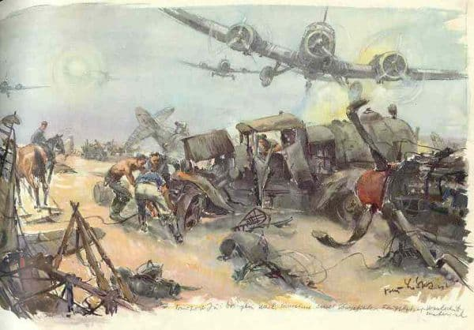
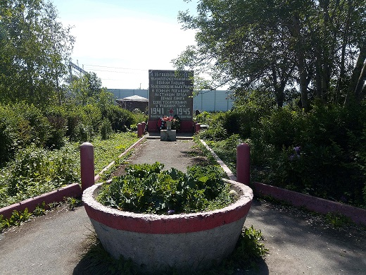

Вруда. Август 41-го. Отступление к Волосово
Дневник ополченца 88-го артиллерийского полка 80-й стрелковой Любанской дивизии Василия Васильевича Чуркина
11 августа дивизия разгрузилась на станции Волосово. Отъехали 5–6 км и утром разместились в лесу недалеко от станции Вруда, деревень Княжино и Малосковицы.
В тот же день наша батарея обстреляла деревню Княжино. Там были немецкие солдаты, они бросились бежать в лес.
Редкий мелкий лес и кустарники. Наши пушки были установлены на небольшой полянке, ящики со снарядами лежали недалеко позади, на траве. Лошадей ездовые отвели в сторону в лесок.
Появился немецкий самолет-разведчик, похожий на У-2, стал кружить над нами. Внизу у самолета два оптических прибора. Кто-то из наших выстрелил в самолет из винтовки. Потом еще, — и пошла трескотня: по самолету палили из сотен винтовок. А он продолжал кружить над нами и, закончив разведку, ушел обратным курсом. Через несколько минут на нас обрушился шквал летящих со свистом мин. Мины, чуть коснувшись земли, с треском рвались, поражая осколками людей. Застонала поляна. Раненые громко кричали от нестерпимой боли, остались лежать убитые. Это была наша первая встреча с врагом, первое боевое крещение.
Пришлось поспешно переезжать на другое место. Немецкие самолеты неотступно преследовали и бомбили нас, а их пушки сразу же нас обстреливали, когда мы останавливались на новом месте.
15 августа недалеко от деревни Ямки в небольшом лесу мы установили свою пушку на лужайке, замаскировали ее и ждали дальнейших распоряжений. Нас было восемь человек — полный орудийный расчет и вместе с нами лейтенант Воронин.
День был солнечный. Появился вражеский истребитель «Мессершмитт», длинный, серебристый. Вдруг из-за леса вынырнули наши два «Ястребка» — коротыши, они быстро набирали высоту, нацелившись на вражеский самолет. Завязался воздушный бой, но скорость «Мессершмитта» превосходила скорость наших истребителей в два с лишним раза. «Мессершмитт» развернулся, зашел в хвост нашим самолетам и стал в них стрелять. Слышны были редкие пушечные выстрелы. «Ястребки» повернули в сторону елового леса, пошли на снижение и скрылись. «Мессершмитт» не преследовал их.
Лейтенант Воронин послал четырех человек из нашего расчета выяснить обстановку, в направлении шоссейной дороги, которая в этом месте проходила густым лесом. По пути, недалеко от нашей пушки, мы встретили группу пехотинцев, около 50 человек. Они ушли с переднего края. Сказали, что удержаться на переднем крае нет сил, что немцы открыли сильный автоматный, пулеметный и минометный огонь, появились танки.
Когда мы подошли к шоссейной дороге в плотном лесу, увидели охваченную паникой толпу, беспорядочно бегущую на дороге на Волосово. На повозке везли раненого. Он стонал и просил перевязать его. Тут же недалеко шла девушка с санитарной сумкой через плечо, она боялась снизить темп движения. Позади, по пятам за бегущей толпой, лязгали гусеницами немецкие танки. Кто-то закричал на девушку, чтобы она немедленно перевязала раненого. Мы повернули обратно и быстро пошли к тому месту, где оставили пушку, но ни пушки, ни людей на том месте не оказалось. Вышли на опушку леса, с правой стороны на открытом месте увидели движущуюся по проселочной дороге четвертую батарею. Но что это? Около движущейся батареи от разрывов снарядов появлялись и сразу же падали столбики рыхлой земли пашни. Вражеские танки шли по шоссейной дороге, увидели батарею и открыли по ней огонь. Батарея помчалась, лошади пошли вскачь, потом они скрылись из виду, въехали в лес. Недалеко позади батареи шла обозная повозка, везла разное имущество. Снаряд разорвался у ног лошади, она вздыбилась и рухнула на землю. Повозка была близко, на ней остались наши шинели, но возвращаться к ней было рискованно: попасть в плен никто не хотел.
Немецкие танки и бронетранспортеры с автоматчиками уже шли впереди нас по дороге к Волосову. Дивизии пришлось срочно переходить на новые рубежи. Вражеские самолеты безнаказанно кружили над нами. Они бомбили и обстреливали каждую повозку и даже одного человека. На дороге с разорванными частями тела лежали убитые. Появляться на дороге было опасно, шли больше лесом.
В ночь на 16 августа пришли в Волосово. Огней никто не зажигал, было полное затемнение. Нас было уже семь человек. Ночевали в траншее на тюфяках, брошенных на доски, под досками хлюпала вода. Утром вышли из траншеи рано, в гимнастерках было прохладно. По улице недалеко от станции мимо нас проезжала повозка с хлебом, солдат дал нам две буханки хорошего теплого хлеба. Разделили и, не останавливаясь, на ходу съели его. На платформе что-то лежало, покрытое большими брезентами, часовой с винтовкой не подпускал на близкое расстояние к платформе. Волосово немцы уже бомбили, всюду были воронки и разрушенные дома. Одна большая бомба упала на дворик дома, на этом месте образовалась огромная воронка, а дом взрывной волной перекинуло на другую сторону улицы. Он не развалился, а как-то встал боком вместе с крышей.
На рельсах под березами стояли два наших бронепоезда, возможно они не принимали никакого участия в боях. У них не было зенитных средств, они были уязвимы с воздуха.
Слышна была артиллерийская стрельба наших батарей. Мы, все семеро, пошли туда, где стреляли пушки. Не очень далеко от Волосова, на перекрестке дорог, увидели наших военных, группу около человек двадцати. Знаков отличия на воротниках гимнастерок у них ни у кого не было. Небольшого роста военный, отделившись от группы, пошел нам навстречу и стал кричать нам: «Сюда, сюда, товарищи, идите!»
Мы не знали, кто он. Говорили потом, что это был командир нашей дивизии. Присоединились к этой группе и пошли по проселочной дороге вместе с шестой батареей, остановились около деревни.
